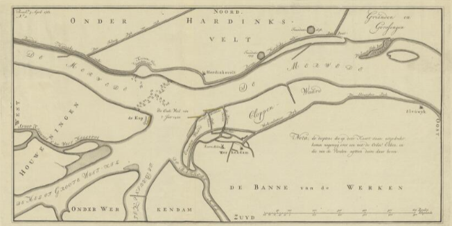
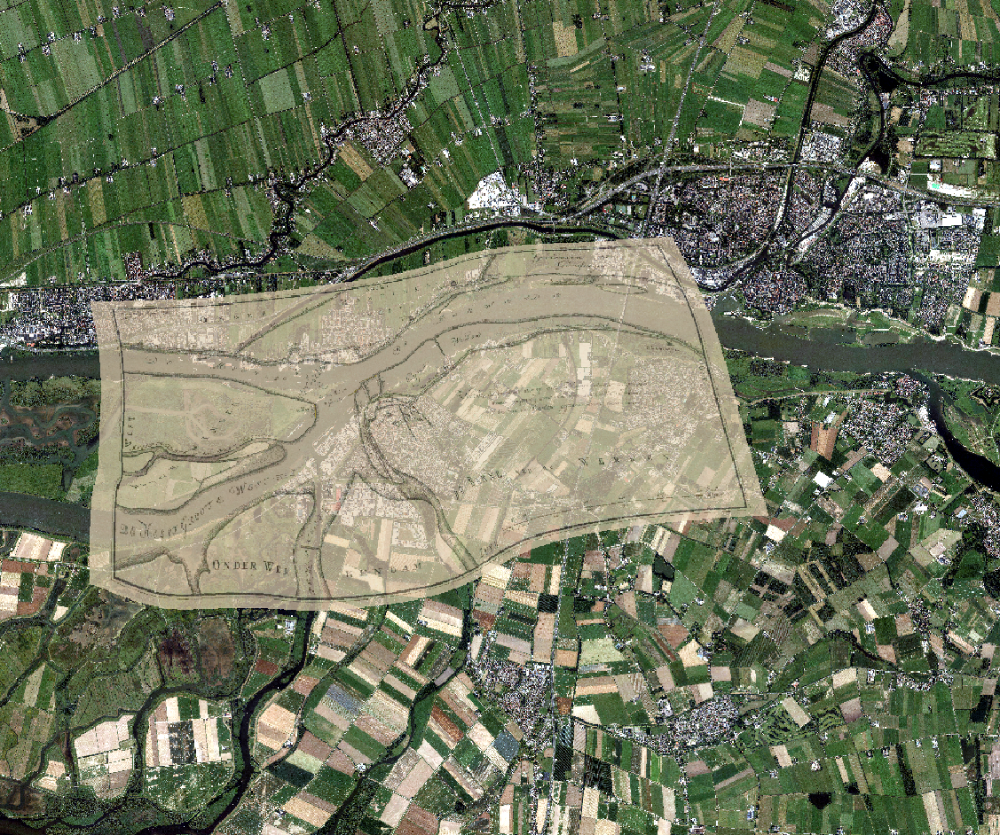
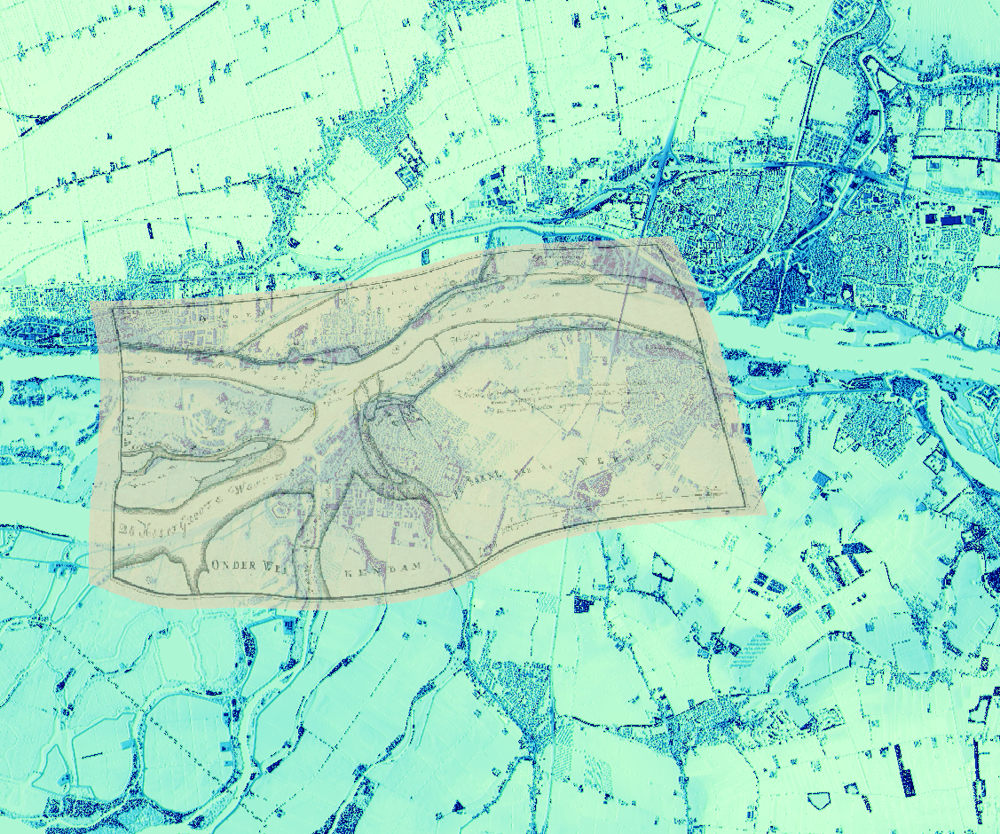
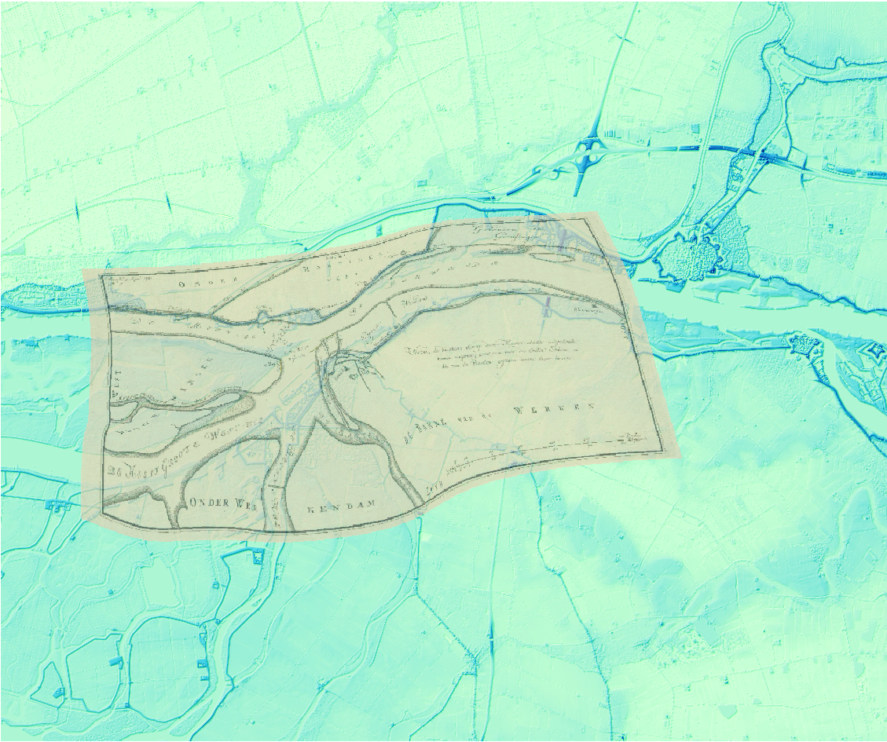

Digital Elevation Models
For this project, I realized a Digital Surface Model and a Digital Terrain Model of a region of interest was a section of the river Merwede between north
brabant and south Brabant. The cities distinguished in the map are Hardinxveld,
Werkendam, Sleeuwijk, and Gorinchem.
Description of the assignment
The aim of this assignment was to compare the variation of a river within a specific region overtime by comparing an old map with our own digital elevation maps.
Two different types of Digital Elevation Models were used - a Digital Terrain Model (DTM), which only includes the ground, and a Digital Surface Model (DSM), which includes everything on the surface of the ground such as trees or buildings.
Old map
I selected a map called “Kaart van de rivier de Merwede bij Hardinxveld wegens de verzanding van de rivier ter hoogte van de Oude Wiel” (or “Map of the Merwede River
near Hardinxveld due to the silting up of the river at the Oude Wiel”), which dates back
to 1761. An interesting information from this map is an inscription left by the
cartographer which states that “The depths printed in white on this year are almost
identical with the order of Ebben, and those of the Vloeden eighteen inches above it”,
although this was translated from Dutch using Google Translate, so I am not sure what
to make of it yet. The cartographer of this map was Melchior Bolstra (1704-1779).
Technical skills
The new skills I gained during this assignment were: georeferencing old maps,clipping maps, merging files, and measuring specific areas. I also improved my skills in figuring out the best fitting color scheme and map layout, to
make it easy for people to understand and visualize.
Image Gallery

“Kaart van de rivier de Merwede bij Hardinxveld wegens de verzanding van de rivier ter hoogte van de Oude Wiel” - Melchior Bolstra (1704-1779)

Here we can really come observe the difference between the evolution of both areas over time. The region is now heavily populated, with bigger and expanding cities, agricultural areas, roads… We can also see that some rivers are now smaller than before, urban structures have taken over water areas, and water taking over urban structures.

This map helps us distinguish urban structures quite easily (main roads, city structures…) and how elevated they are compared to the NAP 0. By comparing this map to the old map, I also observed the loss of different buildings such as an old mill in Werkendam, or the two small lakes present in both maps almost around 260 years apart, near the river dike.

The DTM map helped us see that both the river and the land were around the same elevation level near NAP 0. And the highest elevation level was due to the dike system near the riverbed